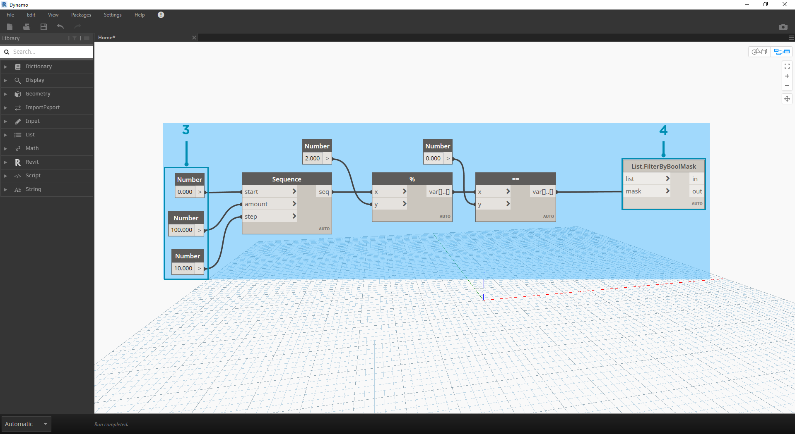

邏輯
藉由邏輯，或者更明確地說，藉由條件邏輯，我們可以根據測試指定單一或一組動作。在評估測試時，將使用布林值表示 True 或 False，可以由此控制程式流程。
布林
數字變數可以儲存所有範圍的不同數字。布林變數只能儲存兩個值，稱為 True 或 False、是或否、0 或 1。由於布林值範圍有限，因此很少使用布林值執行計算。
條件陳述式
「If」陳述式是程式設計中的關鍵概念：「如果這是真的，則會發生那件事，否則會發生其他事。」由布林值確定所產生的陳述式動作。在 Dynamo 中，可以採用多種方式定義「if」陳述式：
| 圖示 | 名稱 | 語法 | 輸入 | 輸出 |
|---|---|---|---|---|
| If | If | test、true、false | result | |
| Formula | IF(x,y,z) | x、y、z | result | |
| Code Block | (x?y:z) | x、y、z | result |
接下來瞭解使用條件「if」陳述式的三種有效節點中每種節點的簡單範例：

在此影像中，boolean設為 true，這意味著結果是字串「this is the result if true」。建立 If 陳述式的三個節點在這裡的工作方式完全相同。

再說一次，節點的工作方式完全相同。若boolean變更為 false，則結果是數字 Pi，如原始 If 陳述式所定義。
篩選清單
下載此練習隨附的範例檔案 (按一下右鍵，然後按一下「連結另存為...」)：Building Blocks of Programs - Logic.dyn。附錄中提供範例檔案的完整清單。
接下來使用邏輯將數字清單分隔為偶數清單與奇數清單。

- Number Range - 加入數字範圍至圖元區。
- Numbers - 加入三個數字節點至圖元區。每個數字節點的值應為：0.0 (start)、10.0 (end) 與 1.0 (step)。
- Output - 輸出是從 0 到 10 的 11 個數字的清單。
- 模除 (%)- 將 Number Range 連接至 x，將 2.0 連接至 y。這會計算清單中的每個數字除以 2 產生的餘數。此清單的輸出是 0 與 1 交替顯示的數值清單。
- 相等性測試 (==) - 加入相等性測試至圖元區。將 模除 輸出插入至 x 輸入，將 0.0 插入至 y 輸入。
- Watch - 相等性測試的輸出是 true 與 false 交替顯示的清單。這些值用於分隔清單中的項目。0 (或 true) 表示偶數，1 (或 false) 表示奇數。
- List.FilterByBoolMask - 此節點將根據輸入的布林值，將這些值篩選到兩個不同清單中。將原始 number range 插入至 list 輸入，將 equality test 輸出插入至 mask 輸入。輸出 in 表示 true 值，而輸出 out 表示 false 值。
- Watch - 結果是我們現在產生了偶數清單與奇數清單。我們已使用邏輯運算子將清單分隔為多種樣式！
從邏輯到幾何圖形
接下來我們將建置第一個練習中建立的邏輯，將此設置套用到塑型作業中。

- 我們從上一個練習開始，採用相同的節點。唯一的例外是
- 我們變更了格式。
- 輸入值已變更。
- 我們並未將 in 清單輸入插入至 List.FilterByBoolMask。暫時將這些節點放在一旁，它們在稍後的練習中會有用。

我們先將節點連接在一起，如以上影像中所示。此節點群組表示定義曲線所用的參數式方程式。一些註記如下：
- 第一個滑棒的最小值應該是 1，最大值應該是 4，步長應是 0.01。
- 第二個滑棒的最小值應該是 0，最大值應該是 1，步長應是 0.01。
- PolyCurve.ByPoints - 若複製以上節點圖，在 Dynamo 預覽視埠中的結果將是正弦曲線。
此處採用的輸入方式：對更具靜態的性質使用數字節點，對更具彈性的性質使用數字滑棒。我們希望保留在這一步開始時定義的原始數字範圍。但是，我們在此建立的正弦曲線應具有某些彈性。我們可以移動這些滑棒以觀看曲線對其頻率與幅度的更新。

我們將對定義進行一些調整，因此接下來看一下最終結果，以便可以參考取得的結果。之前，前兩個步驟是分別執行的，現在我們要連接兩者。我們將使用基準正弦曲線以驅動拉鍊元件的位置，並使用 true/false 邏輯實現大小方塊的交替變化。

- Math.RemapRange - 接下來使用步驟 01 中建立的數字序列，透過重新對映範圍建立新的數字系列。步驟 01 中的原始數字介於 0-100 之間。現在這些數字的範圍分別由 newMin 與 newMax 輸入限制為從 0 至 1。

- Curve.PointAtParameter - 將步驟 2 中的 Polycurve.ByPoints 插入至curve，將 Math.RemapRange 插入至 param。此步驟將建立沿曲線的點。我們將數字重新對映到從 0 至 1 的範圍，因為 param 的輸入會尋找此範圍內的值。0 值表示起點，1 值表示終點。演算的所有數字都位於 [0,1] 範圍內。

- List.FilterByBoolMask - 將上一步中的 Curve.PointAtParameter 插入至 list 輸入。
- Watch - in 的 Watch 節點與 out 的 Watch 節點將展示分別代表偶數項與奇數項的兩個清單。這些點按照在曲線上的位置順序排序，我們將在下一步中展示這一點。

- Cuboid.ByLengths - 重新建立以上影像中顯示的連接，以產生沿正弦曲線的拉鍊。立方體在這裡只是方塊，我們將根據方塊中心的曲線點定義其大小。現在，模型中應該已清晰呈現偶數/奇數的區分邏輯。

- Number Slider - 返回定義的開始，我們可以調整數字滑棒，然後觀看拉鍊更新。頂部的一列影像表示頂部數字滑棒的範圍值。這是波的頻率。
- Number Slider - 底部的一列影像表示底部滑棒的範圍值。這是波的幅度。